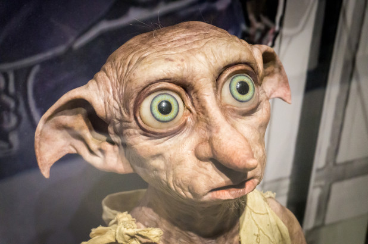

La question que tout le monde se pose, que se passe t'il après la mort? Beaucoup de personne se pose cette question, notre reporter Suzie Moreau tente coute que coute de répondre à cette question afin d'illuminer les esprits des adeptes de son mouvement. Durant ces 6 mois de tournage, Suzie est aller dans les endroits les plus térrifiants de la terre afin d'y découvrir de nouvelles personnes ou plutôt de nouvelles créature. Nous vous laissons les découvrir en image
Suzie s'est rendue dans une zone non carthographié afin de avoir ce qu'il se passait réellement entre les morts et les vivants. Ella a d'ailleurs été témointe d'une scène ou elle a perdu son amis Pablo Rodriguez De La Vegua. Ame sensible s'abstenir.
Mais rassurez vous malgré les terribles rencontres de Suzie, elle a quand même réussi à rencontrer des personnes gentilles qui 'lont aidé dans son reportage. Nous vous présentons Pauline JOLEC plus connue sous le nom de DOBBY
